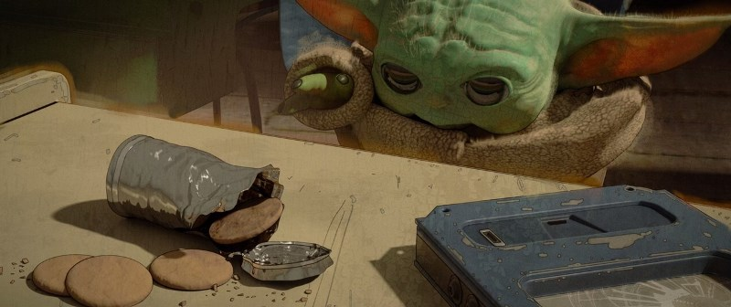

Mandalorian-2
«Мандало́рец» (англ. The Mandalorian), также известен, как «Звёздные во́йны: Мандало́рец» (англ. Star Wars: The Mandalorian), — американский телесериал в жанре космический вестерн, созданный Джоном Фавро и выходящий на стриминговом сервисе Disney+. Это первый игровой сериал, являющийся составной частью вселенной «Звёздных войн». Действие «Мандалорца» разворачивается пять лет спустя после событий «Возвращения джедая» и за 25 лет до событий «Пробуждения силы». Главным героем является охотник за головами Дин Джарин из клана мандалорцев, обитающий на окраине Новой Республики. Главную роль исполняет Педро Паскаль.
Фавро выступает главным сценаристом и шоураннером сериала. Он также является исполнительным продюсером наряду с Дэйвом Филони, Кэтлин Кеннеди и Колином Уилсоном. Премьера сериала состоялась 12 ноября 2019 года на Disney+; первый сезон состоит из восьми серий. Сериал получил положительные отзывы критиков, которые хвалили актёрскую игру, режиссуру, сценарий, саундтрек и визуальные эффекты, хотя некоторые остались недовольны динамикой сюжета. «Мандалорец» был номинирован на премию «Эмми» в категории «Лучший драматический сериал», а также получил семь творческих премий «Эмми»[en] из 14 номинаций.
Премьера второго сезона, также состоящего из восьми серий, состоялась 30 октября 2020 года, в то время как работа над третьим сезоном началась еще в апреле 2020 года.
Источник данныхАвтор работы